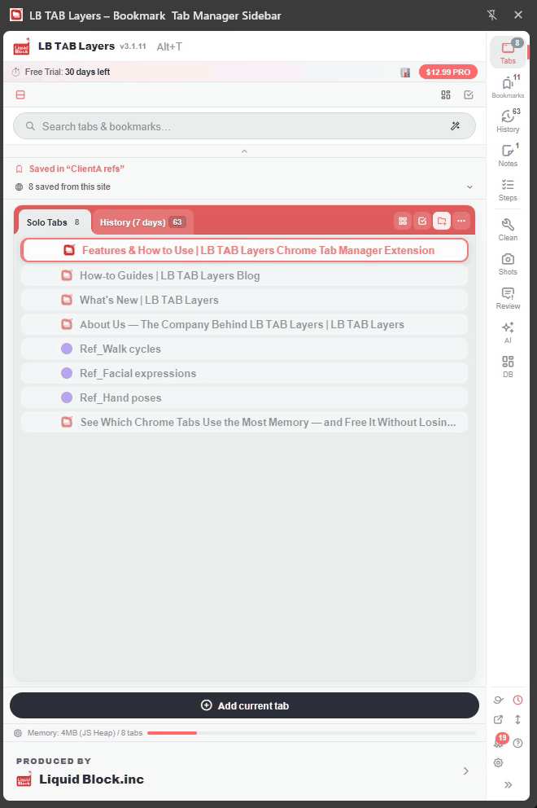
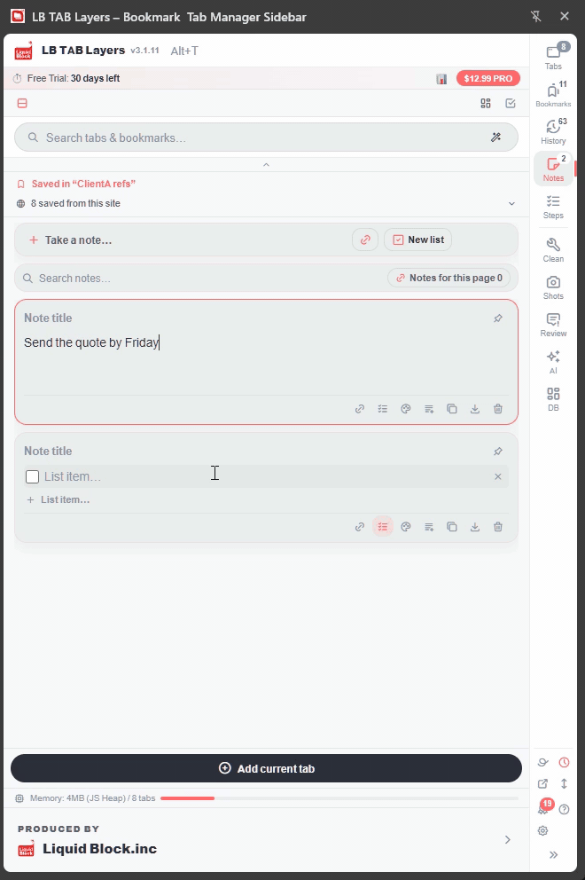
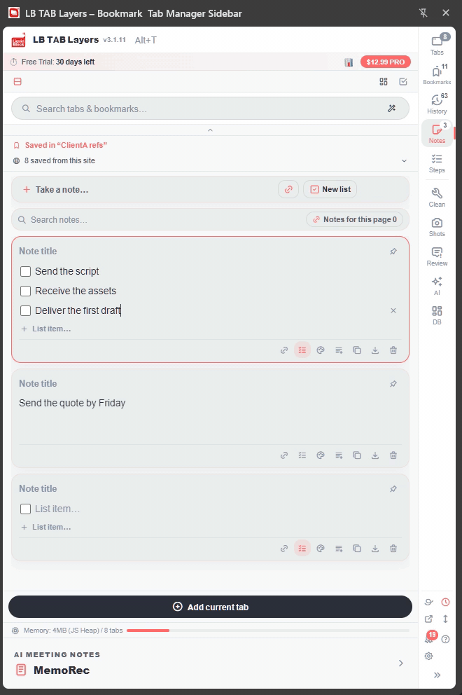
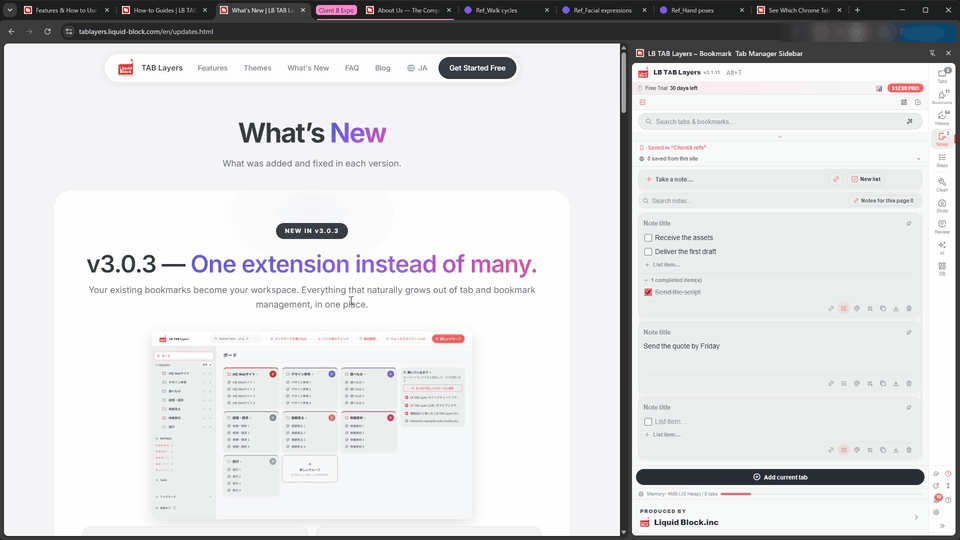
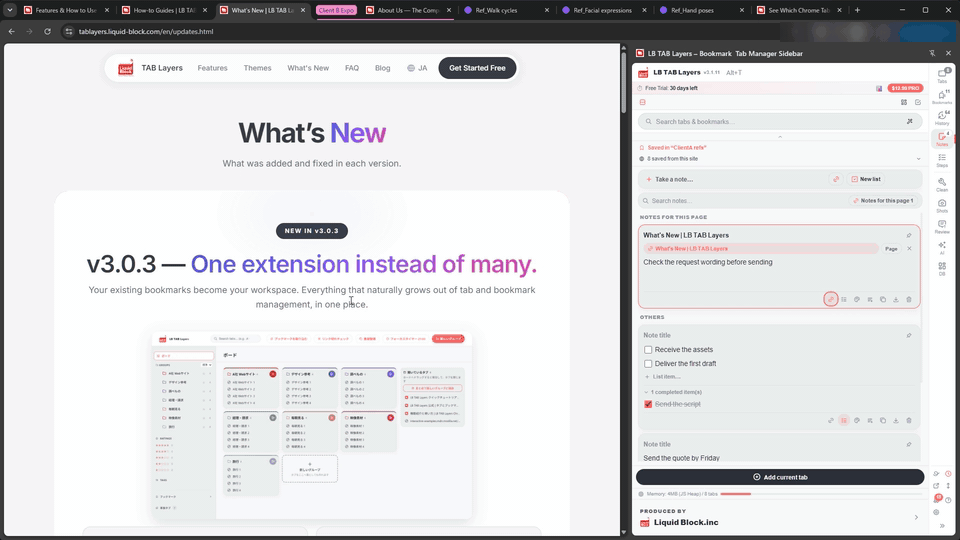
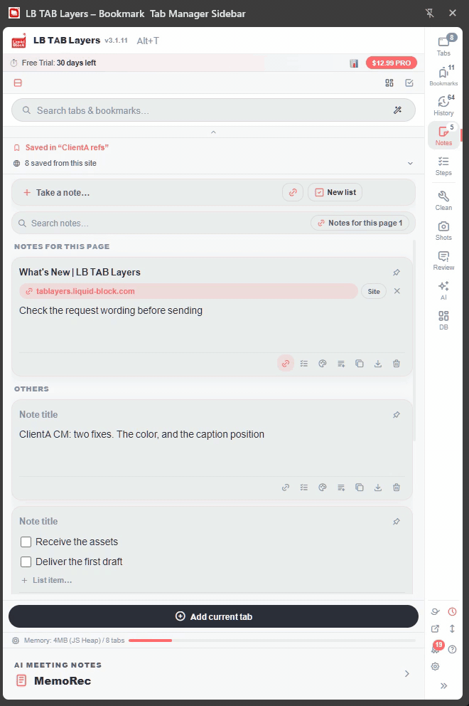
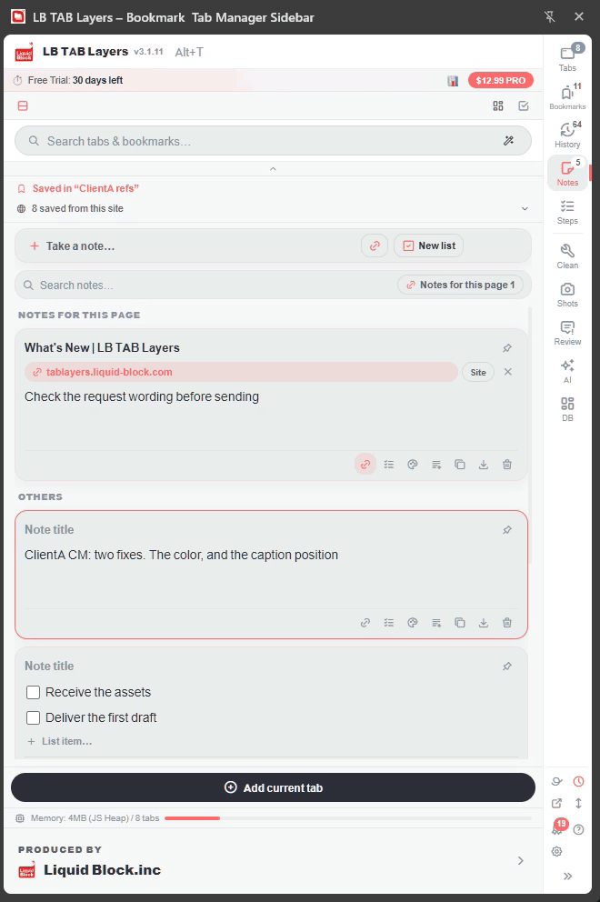
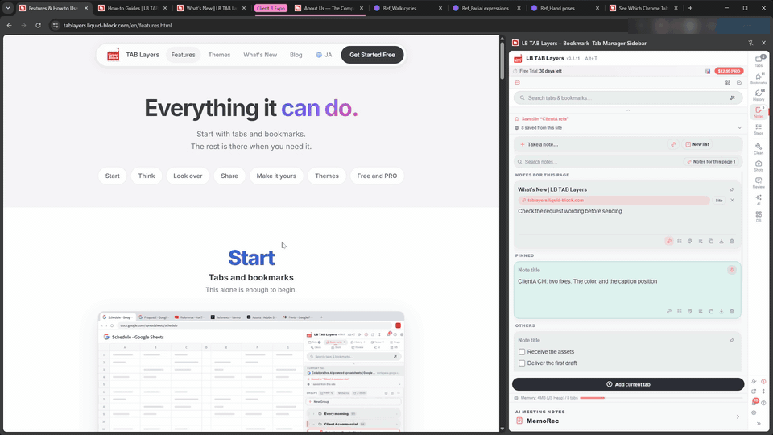

Write a note
Jot down what comes to mind. It's saved automatically
Where: “＋” in the Notes view
Click “Notes” in the right rail to open the Notes view. Click “Take a note…” to start a new note. What you type is saved automatically.

Help Notes
For people who don't want to forget what they were thinking on a page, and want to jot things down right away.
Jot down what comes to mind. It's saved automatically
Where: “＋” in the Notes view
Click “Notes” in the right rail to open the Notes view. Click “Take a note…” to start a new note. What you type is saved automatically.

Turn to-dos into rows you can check off. Finished ones gather at the bottom
Where: “New list”
Click “New list” to make a note with checkboxes. Press Enter for the next row; press Backspace on an empty row to remove it. Checked items gather under the completed items at the bottom.


Attach a note to the page you're viewing. It shows at the top when you open that page
Where: The link button
In the Notes view, click the link button to create a note attached to the page you're viewing. The note carries the page's title and appears at the top whenever you open that page. Click “Notes for this page” to show only the notes for that page.

Attach a note to a whole site, or to a group
Where: The link icon under a note
From the link icon under a note, attach it to this page, this whole site, or a group. When notes are attached to a group, the group's header shows a 📝 count.

Search by words. You can also narrow to “Notes for this page”
Where: Top of the Notes view
Use “Search notes…” in the Notes view to search titles, text, checklist items and the names of attached pages. Separate words with a space to narrow the results to notes that contain all of them.

Pin important notes to the top. Color-code with 8 colors
Where: Top right / bottom of a note
Use the pin to keep important notes at the top. Use the palette to choose from 8 colors.

Copy as Markdown, save as text, delete
Where: Under a note
The buttons under a note let you copy it as Markdown, save it as a text file, or delete it.
Select text on a page and right-click to add it to that page's note
Where: Right-click on a page
Select text on a page, right-click and choose “Add selection to Notes” to add it to that page's note. It works even when the panel is closed.

Put a note's text into an input field on the page (email, chat and so on)
Where: Under a note / right-click an input field
Click “Insert into the page” under a note to put the note's text into the input field you last clicked on the page (an email or chat box, for example). If there is no input field, the text is copied instead. PRO feature (available during the free trial).

Add a short note to a saved tab
Where: Right-click a saved tab
Right-click a saved tab to add a short, one-line note to that bookmark. Leave yourself a reminder of why you saved it.
LB TAB Layers is free to add to Chrome. Once it is installed, press Alt+T to open it any time.
Add to Chrome for free